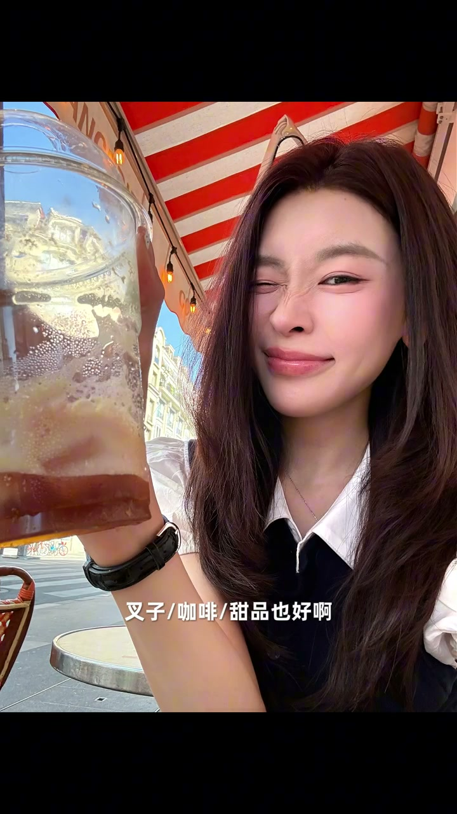
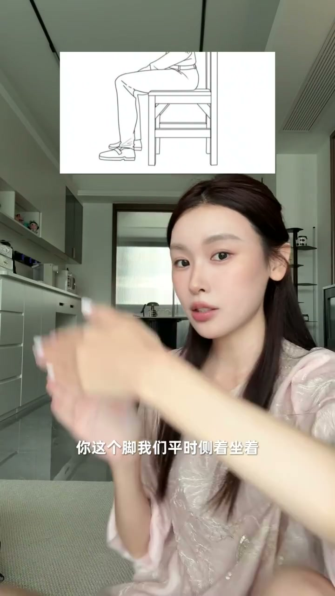

铁律：脑袋放在第一条线靠下
00:13第一条铁律：不管你是正拍、仰拍、俯拍、自拍，打开你手机的九宫格，你的脑袋主体永远只能在第一条线稍微靠下一点的位置这个区间，而且你的眼睛不要出现在第一条线的靠上。
00:30自拍演示：眼睛出现在第一条线周围（侧一点、俯一点、仰一点）都挺好看；但如果眼睛在下面，脸直接全票打飞。
00:44为什么一定要记住：保证不那么周到的建模永远不可能出现变形。想要头顶天、大一点的效果，后期自己去裁。
拍哪，就让哪贴近最下面的线
00:54在这个铁律下，照片万变不离其宗：仰拍、俯拍、自拍、正拍、站着的、坐着的，都丰富起来了。
01:02俯拍的图（鬼马精灵感）一个原则：把脑袋、脸放在铁律区域，管下面就可以——如果打算只拍到膝盖，就让膝盖无限接近最下面的线；打算拍到脚丫子，就让脚无限接近最下面的线。你打算拍哪，就让哪无限接近最下面这条线。
俯拍：往后躺，下巴平行
01:25俯拍人好看的小技巧：当别人俯拍你的时候，你有一个往后仰、往后躺的感觉。下巴平行，千万不要低头（低头双下巴就出来了）。
01:36胳膊撑起来，往后躺——头肩比、整个人的比例会更和谐。
仰拍：手机拿低，身体前倾
01:41仰拍同比：拍你的人手机拿得比你稍微低一点，头一样放在铁律位置。想拍到腰这里，可以把画面线往下挪一点（挪到胯下面）。
01:55仰拍好看的姿势：所有仰拍全部往前倾一点，有一个往前勾的姿势——整个人更和谐，和镜头的互动感更强。
自拍：手里要有东西
02:07自拍只要保证那条铁律，很容易出神图——随便做各种古怪的表情。但注意一点：互动感。
02:16不要光展示自己，拿叉子也好、咖啡也好、甜品也好，把它们作为镜头的主体，有一点互动——手里一定要有东西，让画面有一种生活的感觉。

坐拍：脚在45度区间
02:33坐着的图构图比站着更容易崩。可以仰拍、俯拍，但技法不精的统一建议俯拍。更容易崩的情况下，限制范围会更大一点：俯拍时，脑袋别出两条九宫格竖线的外面（出去了头就变形），脑袋框在这个区域，角度可以无限变化。
03:05下面是脚：坐着侧坐，脚别垂直90度贴地。要么往后挪45度（稍俏皮），要么往前挪45度（稍潇洒）。如果一定要直着坐，把脚尖点起来。
03:28两个极端都不行：全伸出去——腿平着非常短；全折回来——容易没脚，整个失衡。在前后45度区间里，腿和整体结构比例才对。

小技巧：对镜自拍
03:42坐着非要仰拍，建议自拍（自己能看到自己，好掌握结构），且不建议露太多腿（镜头下腿会粗）。
03:51还有一个小技巧：旅行中找一些有反光的地方，去对镜自拍——丰富感会多一点。
03:57以上就会出现这样的九宫格、这样的九宫格。你拍多了以后就会发现：万变不离这条铁律。